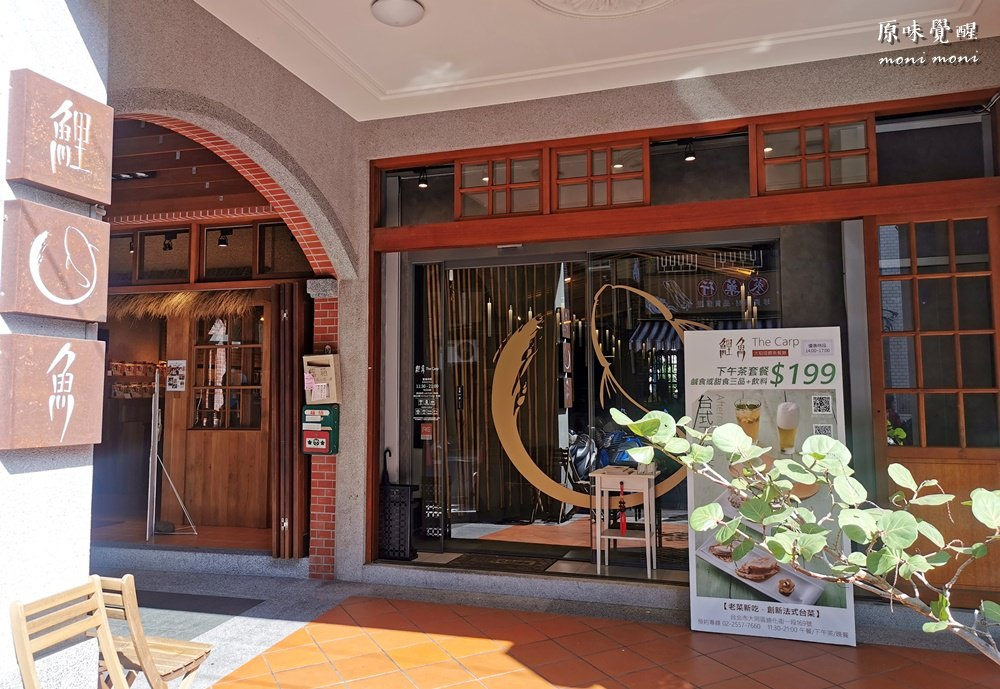
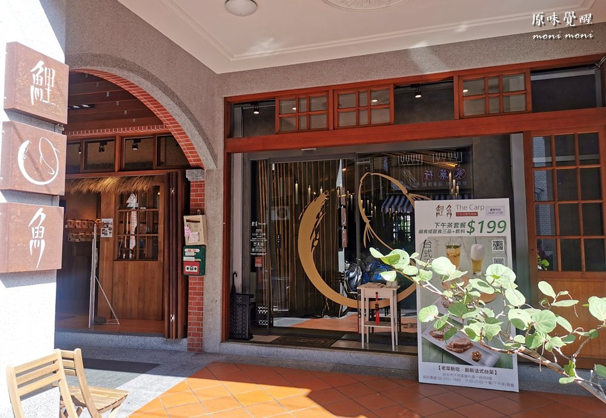
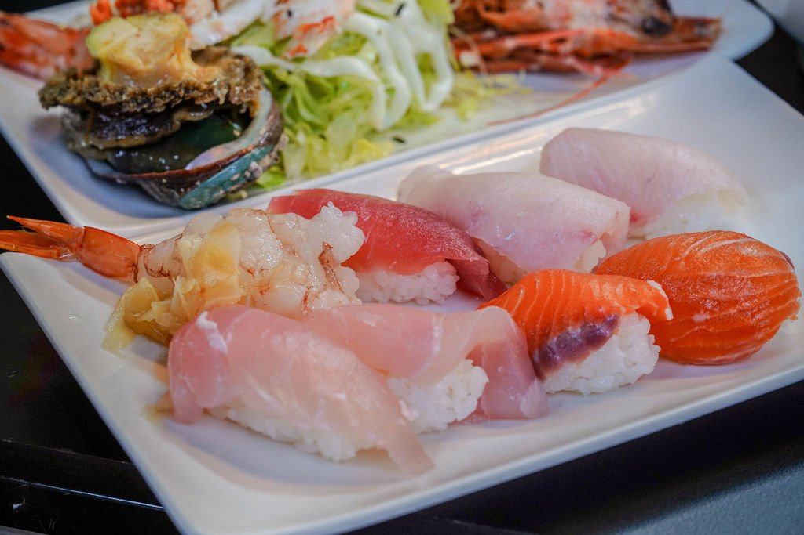
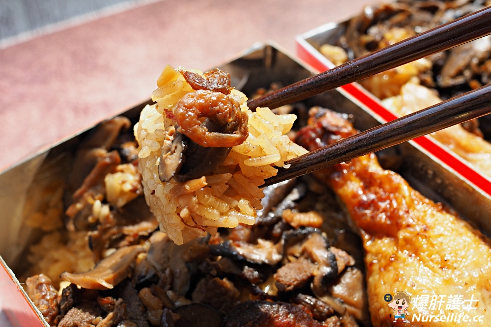
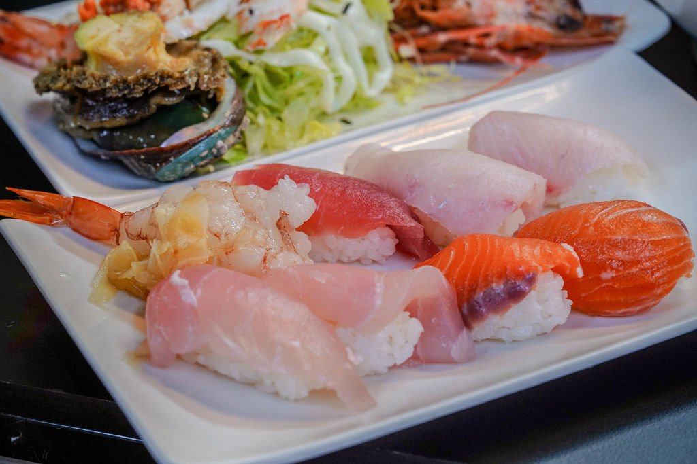
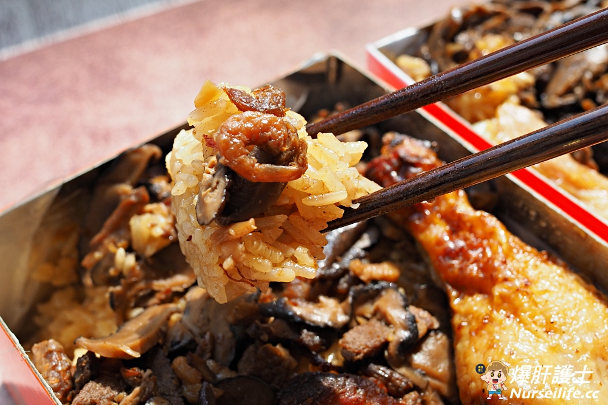

最新消息

美食大稻埕

 

 



波麗路西餐廳
 臺北市大同區民生西路314號
臺北市大同區民生西路314號
位於民生西路上的波麗路西餐廳， 1934年開業，為全台第一間西餐廳， 見證了大稻埕的繁華起落，時代的更迭。 走進波麗路 品嚐臺灣人最先認識的西餐味。
景點大稻埕 


俗稱大稻埕媽祖宮，供奉天上聖母，即俗稱的媽祖或天后，是航海的守護神，與法主宮、霞海城隍廟共稱大稻埕三大廟宇。
除了以供奉媽祖聞名外，廟口的小吃區也發展成慈聖宮的特有特色，成為在地人的日常美食，遊客不可不訪的景點。
更多資訊

2006年10月17日，臺灣文化協會成立85週年之際，臺北市政府以歷史反諷的方式，選擇日治時期監督文化協會活動的臺北北警察署為館址，設立臺灣新文
化運動館，宣示追憶文化先覺者為提昇臺灣文化，掌握臺灣文化主體性的大無畏情操，重現自覺年代臺灣新文化運動的絕代風華。
更多資訊
位於歸綏街303巷9號的辜家鹽館，是前海基會董事長辜振甫的父親辜顯榮於1910年所興建的。由於辜家當時經營鹽業，因此這棟辜家大宅，也一直被稱為「鹽館」。它就面對著當時的淡水河碼頭，原來是為了做生意，房子建在河邊，船就可以直接在屋前靠岸。
更多資訊
台北霞海城隍廟是內政部依文資法所核定的三級古蹟，昔日與慈聖宮、法主公廟合稱大稻埕三大廟宇。霞海城隍信仰在道光元年(1821)， 隨著福建泉州府同安縣下店鄉居民渡台至今已超過200年，而下店鄉又名霞城，渡海來台後便稱為霞海城隍
更多資訊

俗稱大稻埕媽祖宮，供奉天上聖母，即俗稱的媽祖或天后，是航海的守護神，與法主宮、霞海城隍廟共稱大稻埕三大廟宇。
除了以供奉媽祖聞名外，廟口的小吃區也發展成慈聖宮的特有特色，成為在地人的日常美食，遊客不可不訪的景點。
更多資訊
2006年10月17日，臺灣文化協會成立85週年之際，臺北市政府以歷史反諷的方式，選擇日治時期監督文化協會活動的臺北北警察署為館址，設立臺灣新文
化運動館，宣示追憶文化先覺者為提昇臺灣文化，掌握臺灣文化主體性的大無畏情操，重現自覺年代臺灣新文化運動的絕代風華。
更多資訊
位於歸綏街303巷9號的辜家鹽館，是前海基會董事長辜振甫的父親辜顯榮於1910年所興建的。由於辜家當時經營鹽業，因此這棟辜家大宅，也一直被稱為「鹽館」。它就面對著當時的淡水河碼頭，原來是為了做生意，房子建在河邊，船就可以直接在屋前靠岸。
更多資訊
台北霞海城隍廟是內政部依文資法所核定的三級古蹟，昔日與慈聖宮、法主公廟合稱大稻埕三大廟宇。霞海城隍信仰在道光元年(1821)， 隨著福建泉州府同安縣下店鄉居民渡台至今已超過200年，而下店鄉又名霞城，渡海來台後便稱為霞海城隍
更多資訊
熱門商家


熱門商品


交通資訊

至橘線大橋頭站、紅線雙連站、綠線北門站下車後，皆可步行 抵達。
- 大稻埕碼頭：綠17、紅33
- 迪化街：811、紅33
- 民生西路口（大稻埕碼頭）：539、669、785、民生幹線

永樂市場與大稻埕公園皆提供停車場